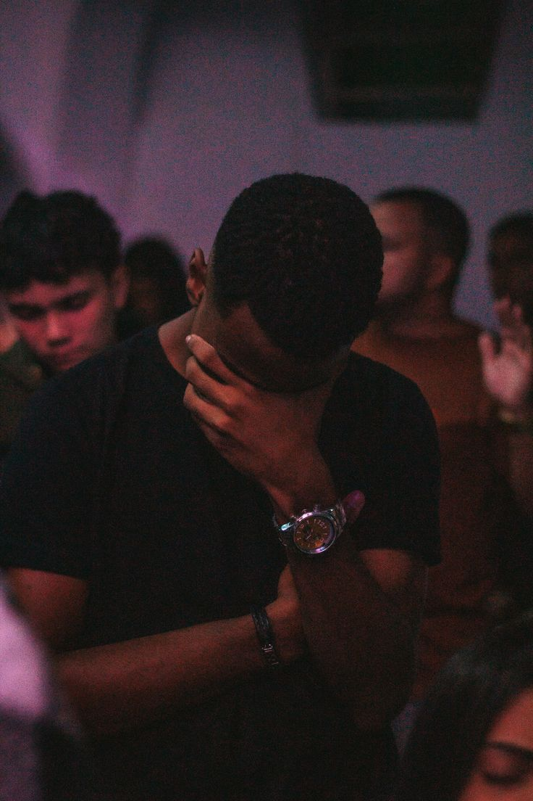

Serving God by Serving People
At Gospel Wonders Mission Church Bulenga, our ministries are designed to help people grow spiritually, discover their gifts, and serve God with excellence. Every ministry provides an opportunity to worship, learn, fellowship, and impact our community through the love of Jesus Christ.

Helping children grow in the knowledge of Jesus Christ through Bible lessons, worship, games, and Christian values in a safe and loving environment.

Empowering young people to become faithful disciples through Bible studies, conferences, mentorship, worship nights, sports, and community outreach.

Encouraging women to grow spiritually, strengthen their families, support one another, and faithfully serve the Kingdom of God.

Building godly men through discipleship, leadership training, prayer meetings, and fellowship that strengthens families and the church.
Leading the congregation into God's presence through uplifting worship, praise, music, and thanksgiving during church services.

Dedicated to interceding for individuals, families, the church, and the nation through regular prayer meetings and fasting.

Sharing the Good News of Jesus Christ through door-to-door evangelism, crusades, missions, and community outreach.

Supporting church services through sound, projection, photography, videography, live streaming, and digital communication.

Welcoming worshippers with love and creating a peaceful, organized, and friendly worship environment for everyone.